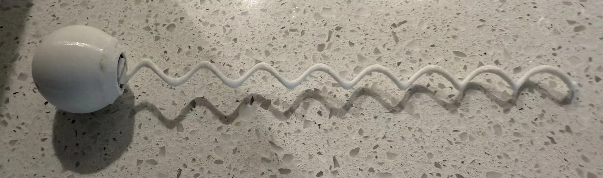

Experimental research · 2025
Biomimetic Swimmer
A 3D printed test platform for helical propulsion in viscous fluids.

A physical model for viscous swimming
I designed and fabricated a scaled mechanical swimmer inspired by E. coli locomotion. It consists of a hollow spherical body and a rigid helical tail. A rubber band serves as a torsional spring that drives relative rotation between the body and tail.


Comparing theory with experiment
I adapted resistive force theory for this geometry and tested it in glycerin at a Reynolds number of about 0.24. The experiments supported the predicted linear trend between translation speed and relative rotation speed. A quantitative difference between model and experiment remained.
Yiwen Gao · Research guidance: Zijie Qu